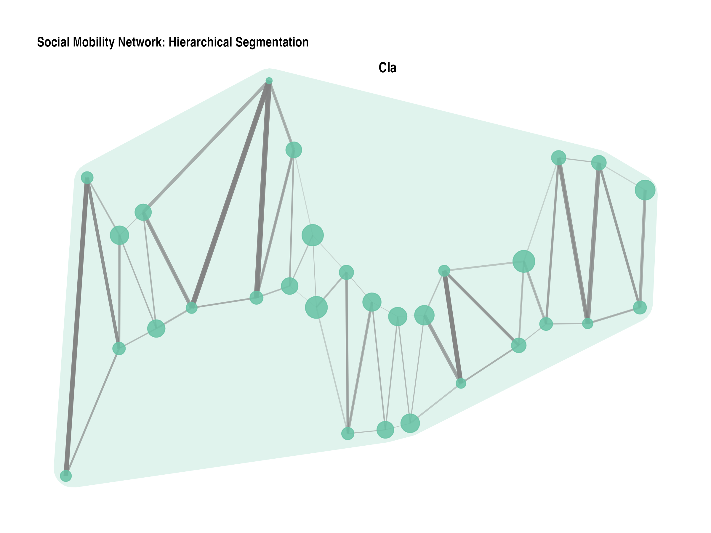
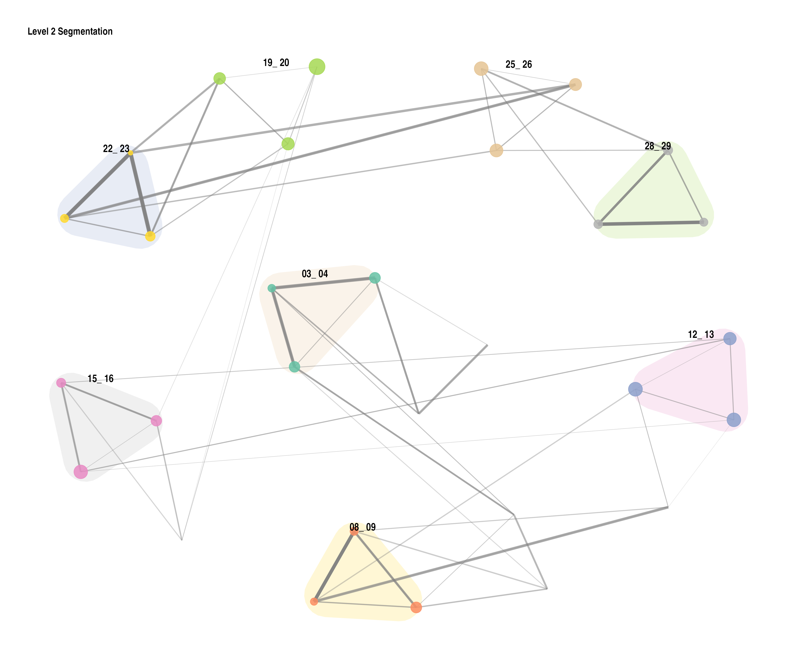
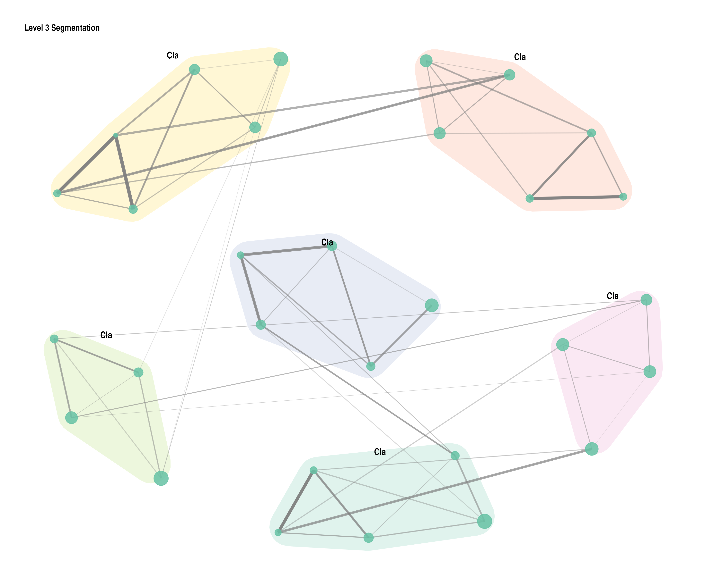
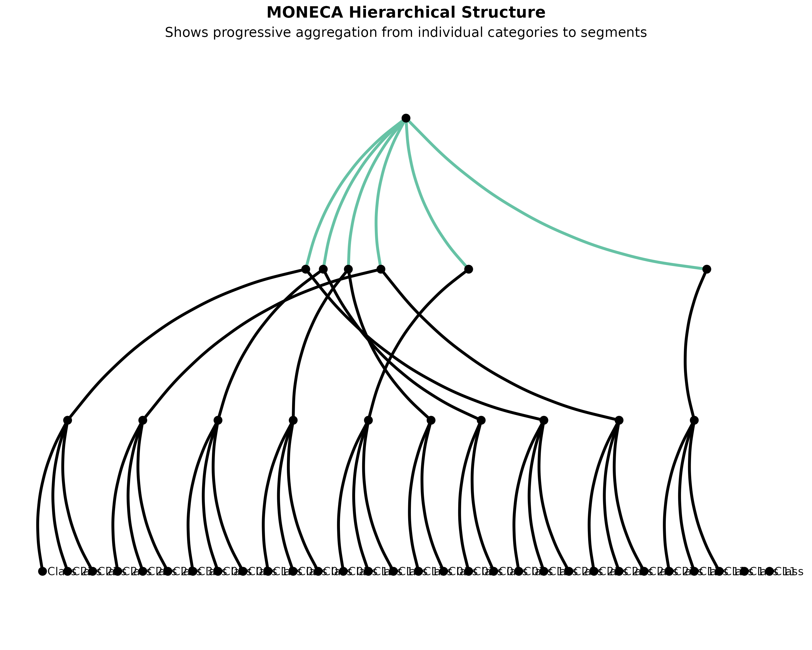
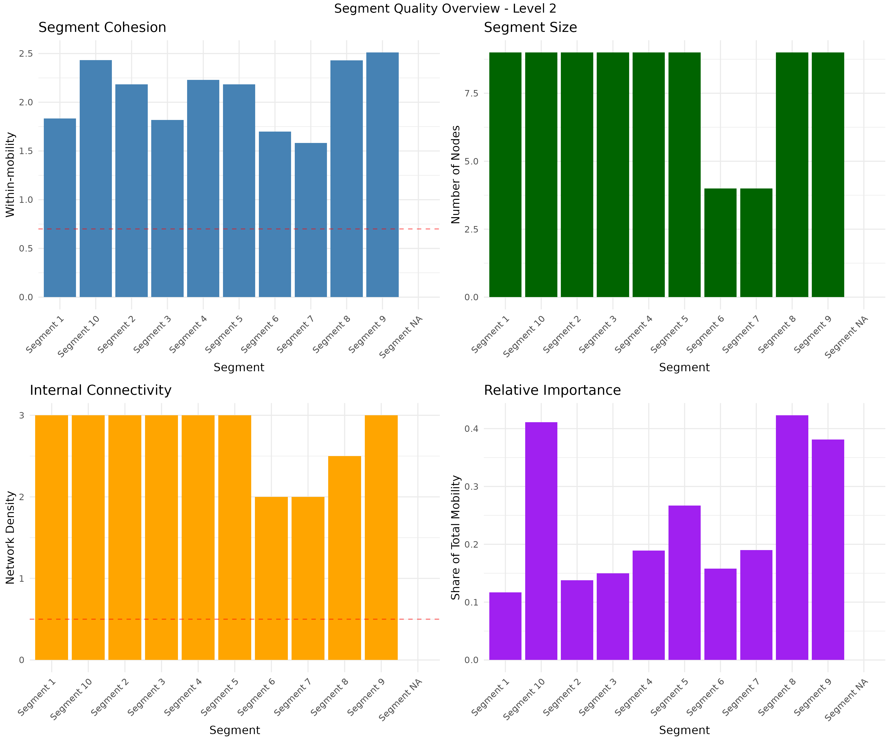
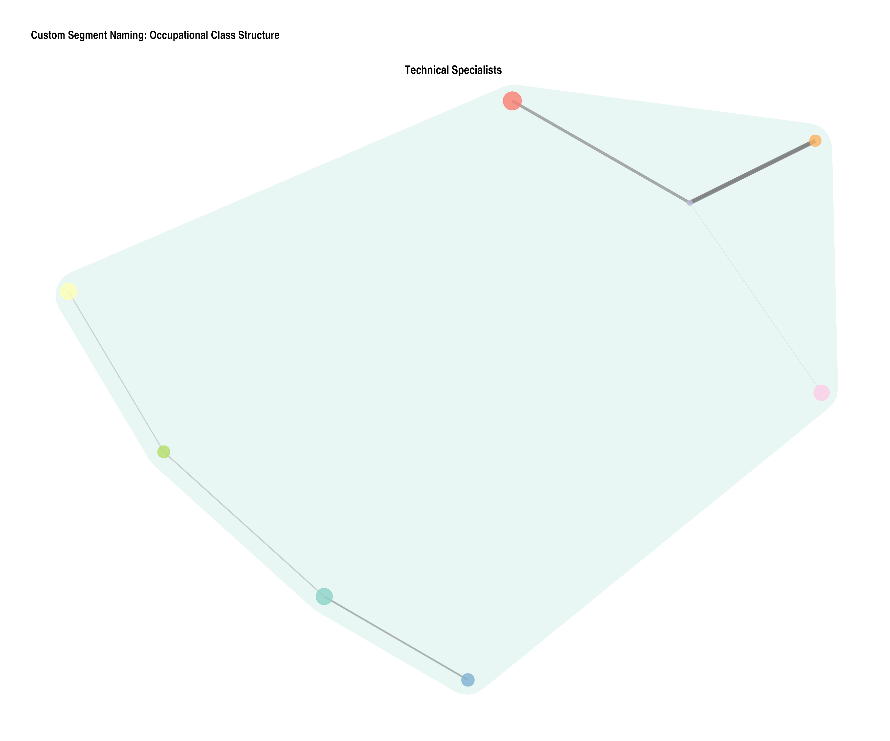

Introduction to moneca: Mobility Network Clustering Analysis
Giampaolo Montaletti
2026-02-15
Source:vignettes/moneca-introduction.Rmd
moneca-introduction.RmdIntroduction
moneca (Mobility Network Clustering Analysis) is an R package that analyzes social mobility patterns through graph-theoretic approaches. The package creates weighted networks from mobility tables and uses cliques to identify discrete and nested clusters of positions with high internal mobility.
About This Vignette
This vignette was written by Giampaolo Montaletti as part of the comprehensive modernization of the moneca package (2024). It provides a complete guide to using the modern features and capabilities of the package, including the new visualization system, synthetic data generation, and enhanced analysis tools.
Package Background
The moneca package (lowercase) is a complete rewrite and modernization of the original MONECA package. While it implements the clustering algorithm originally developed by Touboel & Larsen (2017), the current package features entirely new code for visualization, testing, data generation, and documentation authored by Giampaolo Montaletti.
Basic Concepts
Social mobility can be represented as a network where:
- Nodes represent social positions (occupations, classes, etc.)
- Edges represent mobility flows between positions
- Edge weights represent the strength of mobility connections
- Clusters represent groups of positions with high internal mobility
MONECA identifies these clusters by:
- Converting mobility tables to relative risk matrices
- Finding cliques in the weighted network
- Iteratively aggregating positions into segments
- Creating hierarchical segmentation levels
Working with Synthetic Data
MONECA includes functions to generate synthetic mobility data for demonstrations and testing.
Creating Basic Synthetic Data
# Generate a large 30-class mobility table for better statistical analysis
basic_data <- generate_mobility_data(
n_classes = 30,
n_total = 50000, # Larger population for better statistical power
immobility_strength = 0.7,
class_clustering = 0.2,
class_names = paste("Class", sprintf("%02d", 1:30)),
seed = 42
)
# View a subset of the structure to show key portions
cat("Mobility matrix dimensions:", dim(basic_data), "\n")
#> Mobility matrix dimensions: 31 31
cat("Total population:", basic_data[31, 31], "\n\n")
#> Total population: 50000
# Show first 8x8 corner with totals to demonstrate structure
cat("First 8x8 corner of mobility matrix with marginal totals:\n")
#> First 8x8 corner of mobility matrix with marginal totals:
subset_matrix <- basic_data[c(1:8, 31), c(1:8, 31)]
print(subset_matrix)
#> Class 01 Class 02 Class 03 Class 04 Class 05 Class 06 Class 07
#> Class 01 2377 388 156 11 14 7 11
#> Class 02 78 500 78 41 8 3 7
#> Class 03 73 140 855 141 57 2 5
#> Class 04 3 20 26 266 39 16 1
#> Class 05 2 2 65 121 785 95 52
#> Class 06 1 1 6 22 72 465 60
#> Class 07 19 12 8 9 239 434 2793
#> Class 08 3 1 3 5 3 54 118
#> Total 2667 1189 1303 742 1313 1199 3178
#> Class 08 Total
#> Class 01 7 3231
#> Class 02 2 782
#> Class 03 4 1374
#> Class 04 2 398
#> Class 05 2 1210
#> Class 06 25 707
#> Class 07 395 4399
#> Class 08 809 1255
#> Total 1411 50000
# Show diagonal (immobility) for first 10 classes
cat("\nImmobility rates for first 10 classes:\n")
#>
#> Immobility rates for first 10 classes:
diagonal_values <- diag(basic_data[1:30, 1:30])[1:10]
row_totals <- basic_data[1:10, 31]
immobility_rates <- round(diagonal_values / row_totals * 100, 1)
names(immobility_rates) <- paste("Class", sprintf("%02d", 1:10))
print(immobility_rates)
#> Class 01 Class 02 Class 03 Class 04 Class 05 Class 06 Class 07 Class 08
#> 73.6 63.9 62.2 66.8 64.9 65.8 63.5 64.5
#> Class 09 Class 10
#> 60.1 60.7The mobility matrix shows: - Rows: Origin classes (where people start) - Columns: Destination classes (where people end up) - Last row/column: Marginal totals - Diagonal: Immobility (staying in same class)
Creating Different Mobility Scenarios
# Create example datasets with different mobility patterns
# Using generate_mobility_data() with different parameters
# For demonstration of larger networks, create custom 30x30 examples
cat("Creating custom 30x30 examples for comparison:\\n")
#> Creating custom 30x30 examples for comparison:\n
# Create 30x30 rigid system
examples_30x30 <- list()
examples_30x30$rigid <- generate_mobility_data(
n_classes = 30,
n_total = 45000,
immobility_strength = 0.85, # Very rigid
class_clustering = 0.9,
class_names = paste("Class", sprintf("%02d", 1:30)),
seed = 100
)
# Create 30x30 fluid system
examples_30x30$fluid <- generate_mobility_data(
n_classes = 30,
n_total = 45000,
immobility_strength = 0.4, # Very fluid
class_clustering = 0.6,
class_names = paste("Class", sprintf("%02d", 1:30)),
seed = 200
)
# Examine the rigid class system - show key portions
cat("Rigid class system (30x30 matrix):\n")
#> Rigid class system (30x30 matrix):
cat("Matrix dimensions:", dim(examples_30x30$rigid), "\n")
#> Matrix dimensions: 31 31
cat("Total population:", examples_30x30$rigid[31, 31], "\n\n")
#> Total population: 45000
# Show first 6x6 corner with totals
cat("First 6x6 corner with marginal totals:\n")
#> First 6x6 corner with marginal totals:
rigid_subset <- examples_30x30$rigid[c(1:6, 31), c(1:6, 31)]
print(rigid_subset)
#> Class 01 Class 02 Class 03 Class 04 Class 05 Class 06 Total
#> Class 01 435 239 122 1 2 0 848
#> Class 02 28 63 39 21 0 1 164
#> Class 03 238 479 926 480 234 1 2448
#> Class 04 4 144 287 543 279 142 1448
#> Class 05 2 3 153 339 632 328 1685
#> Class 06 3 0 5 84 149 292 767
#> Total 768 976 1603 1521 1520 1275 45000
# Show immobility rates for first 8 classes
cat("\nImmobility rates (%) for first 8 classes in rigid system:\n")
#>
#> Immobility rates (%) for first 8 classes in rigid system:
rigid_diag <- diag(examples_30x30$rigid[1:30, 1:30])[1:8]
rigid_totals <- examples_30x30$rigid[1:8, 31]
rigid_rates <- round(rigid_diag / rigid_totals * 100, 1)
names(rigid_rates) <- paste("Class", sprintf("%02d", 1:8))
print(rigid_rates)
#> Class 01 Class 02 Class 03 Class 04 Class 05 Class 06 Class 07 Class 08
#> 51.3 38.4 37.8 37.5 37.5 38.1 36.6 36.5
# Examine the fluid (highly mobile) system
cat("\nFluid mobility system (30x30 matrix):\n")
#>
#> Fluid mobility system (30x30 matrix):
cat("Matrix dimensions:", dim(examples_30x30$fluid), "\n")
#> Matrix dimensions: 31 31
cat("Total population:", examples_30x30$fluid[31, 31], "\n\n")
#> Total population: 45000
# Show first 6x6 corner with totals
cat("First 6x6 corner with marginal totals:\n")
#> First 6x6 corner with marginal totals:
fluid_subset <- examples_30x30$fluid[c(1:6, 31), c(1:6, 31)]
print(fluid_subset)
#> Class 01 Class 02 Class 03 Class 04 Class 05 Class 06 Total
#> Class 01 599 508 220 7 8 3 1448
#> Class 02 381 517 381 192 8 1 1597
#> Class 03 209 372 564 394 203 7 1853
#> Class 04 3 230 435 546 455 237 2017
#> Class 05 0 4 141 320 400 281 1404
#> Class 06 3 2 2 125 295 336 1216
#> Total 1285 1710 1821 1662 1632 1424 45000
# Show immobility rates for first 8 classes
cat("\nImmobility rates (%) for first 8 classes in fluid system:\n")
#>
#> Immobility rates (%) for first 8 classes in fluid system:
fluid_diag <- diag(examples_30x30$fluid[1:30, 1:30])[1:8]
fluid_totals <- examples_30x30$fluid[1:8, 31]
fluid_rates <- round(fluid_diag / fluid_totals * 100, 1)
names(fluid_rates) <- paste("Class", sprintf("%02d", 1:8))
print(fluid_rates)
#> Class 01 Class 02 Class 03 Class 04 Class 05 Class 06 Class 07 Class 08
#> 41.4 32.4 30.4 27.1 28.5 27.6 29.0 27.8Running MONECA Analysis
Basic Analysis
# Run MONECA on the basic dataset
seg <- moneca(basic_data, segment.levels = 3)
#> | | | 0% | |= | 2% | |== | 3% | |==== | 5% | |===== | 7% | |====== | 9% | |======= | 10% | |======== | 12% | |========== | 14% | |=========== | 16% | |============ | 17% | |============= | 19% | |============== | 21% | |================ | 22% | |================= | 24%
#> 25% ready!
#> | |================== | 26% | |=================== | 28% | |===================== | 29% | |====================== | 31% | |======================= | 33% | |======================== | 34% | |========================= | 36% | |=========================== | 38% | |============================ | 40% | |============================= | 41% | |============================== | 43% | |=============================== | 45% | |================================= | 47% | |================================== | 48% | |=================================== | 50%
#> 51% ready!
#> | |==================================== | 52% | |===================================== | 53% | |======================================= | 55% | |======================================== | 57% | |========================================= | 59% | |========================================== | 60% | |=========================================== | 62% | |============================================= | 64% | |============================================== | 66% | |=============================================== | 67% | |================================================ | 69% | |================================================= | 71% | |=================================================== | 72% | |==================================================== | 74%
#> 75% ready!
#> | |===================================================== | 76% | |====================================================== | 78% | |======================================================== | 79% | |========================================================= | 81% | |========================================================== | 83% | |=========================================================== | 84% | |============================================================ | 86% | |============================================================== | 88% | |=============================================================== | 90% | |================================================================ | 91% | |================================================================= | 93% | |================================================================== | 95% | |==================================================================== | 97% | |===================================================================== | 98% | |======================================================================| 100%
#> 100% ready!
#>
#> | | | 0% | |======= | 10% | |============== | 20%
#> 27% ready!
#> | |===================== | 30% | |============================ | 40% | |=================================== | 50%
#> 55% ready!
#> | |========================================== | 60% | |================================================= | 70% | |======================================================== | 80%
#> 82% ready!
#> | |=============================================================== | 90% | |======================================================================| 100%
#> 100% ready!
# View the results
print(seg)
#>
#> ================================================================================
#> moneca MOBILITY ANALYSIS RESULTS
#> ================================================================================
#>
#> OVERALL MOBILITY PATTERNS
#> -------------------------------------------------------------------------------
#> Overall Population Mobility Rate: 35.4%
#> Average Mobility Concentration (all levels): 90.9%
#>
#> HIERARCHICAL SEGMENTATION ANALYSIS
#> -------------------------------------------------------------------------------
#>
#> Internal Mobility Within Segments (%):
#> Level 1 Level 2 Level 3 Level 4
#> 64.6 76.8 85.3 100.0
#>
#> Mobility Concentration in Significant Pathways by Level (%):
#> Level 1 Level 2 Level 3 Level 4
#> 91.0 87.4 85.3 100.0
#>
#> Network Structure by Level:
#> Level 1 Level 2 Level 3 Level 4
#> -------------------------------------------------------------------------------
#> Active Segments/Classes: 30 12 6 1
#> Significant Edges: 104 12 0 0
#> Network Density: 0.120 0.091 0.000 NaN
#> Isolated Segments: 0 0 6 1
#>
#> DETAILED WEIGHTED DEGREE DISTRIBUTIONS (STRENGTH)
#> -------------------------------------------------------------------------------
#>
#> Total Weighted Connections (Strength In + Out):
#> Min Q1 Median Mean Q3 Max
#> Level 1 8.77 15.32 20.14 20.55 25.81 39.11
#> Level 2 1.07 2.03 2.57 2.75 3.25 5.56
#> Level 3 0.00 0.00 0.00 0.00 0.00 0.00
#> Level 4 0.00 0.00 0.00 0.00 0.00 0.00
#>
#> Outward Mobility Strength (Weighted Out-Degree):
#> Min Q1 Median Mean Q3 Max
#> Level 1 5.36 7.81 10.64 10.27 12.05 15.58
#> Level 2 0.00 0.00 1.14 1.37 2.67 3.31
#> Level 3 0.00 0.00 0.00 0.00 0.00 0.00
#> Level 4 0.00 0.00 0.00 0.00 0.00 0.00
#>
#> Inward Mobility Strength (Weighted In-Degree):
#> Min Q1 Median Mean Q3 Max
#> Level 1 1.87 6.55 9.69 10.27 14.24 26.51
#> Level 2 0.00 0.78 1.12 1.37 1.71 4.39
#> Level 3 0.00 0.00 0.00 0.00 0.00 0.00
#> Level 4 0.00 0.00 0.00 0.00 0.00 0.00
#>
#> Edge Weight Distribution (Relative Risk Values):
#> Min Q1 Median Mean Q3 Max
#> Level 1 1.02 1.61 2.42 2.96 3.76 8.35
#> Level 2 1.04 1.07 1.16 1.37 1.51 2.23
#> Level 3 NA NA NA NaN NA NA
#> Level 4 NA NA NA NaN NA NA
#>
#> ================================================================================The MONECA object contains: - segment.list: Hierarchical
clusters for each level - mat.list: Aggregated mobility
matrices for each level
Understanding the Results
# View segment membership
membership <- segment.membership(seg)
cat("Segment membership summary:\n")
#> Segment membership summary:
cat("Number of levels:", length(membership), "\n")
#> Number of levels: 2
for(i in 1:length(membership)) {
cat("Level", i, "- Number of segments:", length(unique(membership[[i]])), "\n")
}
#> Level 1 - Number of segments: 30
#> Level 2 - Number of segments: 1
# Show first 15 class memberships at each level
cat("\nSegment membership for first 15 classes:\n")
#>
#> Segment membership for first 15 classes:
membership_subset <- data.frame(
Class = paste("Class", sprintf("%02d", 1:15)),
Level_1 = membership[[1]][1:15],
Level_2 = membership[[2]][1:15]
)
if(length(membership) >= 3) {
membership_subset$Level_3 <- membership[[3]][1:15]
}
print(membership_subset)
#> Class Level_1 Level_2
#> 1 Class 01 Class 01 4.1
#> 2 Class 02 Class 02 4.1
#> 3 Class 03 Class 03 4.1
#> 4 Class 04 Class 04 4.1
#> 5 Class 05 Class 05 4.1
#> 6 Class 06 Class 06 4.1
#> 7 Class 07 Class 07 4.1
#> 8 Class 08 Class 08 4.1
#> 9 Class 09 Class 09 4.1
#> 10 Class 10 Class 10 4.1
#> 11 Class 11 Class 11 4.1
#> 12 Class 12 Class 12 4.1
#> 13 Class 13 Class 13 4.1
#> 14 Class 14 Class 14 4.1
#> 15 Class 15 Class 15 4.1
# View the aggregated matrix for level 2
cat("\nLevel 2 aggregated matrix dimensions:", dim(seg$mat.list[[2]]), "\n")
#>
#> Level 2 aggregated matrix dimensions: 13 13
print("Level 2 aggregated matrix:")
#> [1] "Level 2 aggregated matrix:"
print(seg$mat.list[[2]])
#> 1 2 3 4 5 6 7 8 9 10 11 12 31
#> 1 1203 15 12 15 14 6 9 149 82 12 6 7 1530
#> 2 21 1688 22 16 16 15 20 19 177 22 5 7 2028
#> 3 21 10 1516 16 16 6 196 28 25 25 46 6 1911
#> 4 22 32 26 2355 28 240 171 30 39 20 15 4 2982
#> 5 42 45 32 47 3257 23 21 92 53 420 10 129 4171
#> 6 51 37 46 308 47 3343 28 42 37 43 12 19 4013
#> 7 41 49 680 356 36 33 3752 42 39 42 21 15 5106
#> 8 397 62 60 66 225 46 47 5715 78 75 30 442 7243
#> 9 452 523 64 64 58 40 54 52 5303 82 16 19 6727
#> 10 65 71 173 58 424 43 38 70 51 5567 342 26 6928
#> 11 32 30 431 23 22 25 15 21 20 456 2036 12 3123
#> 12 59 48 29 34 629 36 26 609 42 34 14 2678 4238
#> 31 2406 2610 3091 3358 4772 3856 4377 6869 5946 6798 2553 3364 50000Modern Visualization with ggraph
MONECA now includes modern visualization functions using ggplot2 and ggraph, designed with accessibility and clarity as primary concerns.
Visualization Design Principles
All MONECA plotting functions follow evidence-based design principles for maximum accessibility and clarity:
- Colorblind Accessibility: Uses viridis, plasma, and ColorBrewer palettes that are perceptually uniform and distinguishable for all types of color vision
- High Contrast: Maintains WCAG AA contrast ratios for text and visual elements
- Redundant Encoding: Uses both color and other visual properties (size, shape, position) to encode information
- Clear Visual Hierarchy: Guides attention through strategic use of size, transparency, and positioning
- Minimal Cognitive Load: Reduces visual clutter while maintaining analytical depth
# Example of accessibility-focused plotting
plot_moneca_ggraph(
seg,
color_palette = "Set2", # Colorblind-safe qualitative palette
node_alpha = 0.85, # High contrast
edge_alpha = 0.6, # Balanced visibility
show_segments = TRUE, # Visual grouping
segment_alpha = 0.2, # Subtle boundaries
label_size = 3.5 # Readable text
)
# For continuous variables, use viridis family
plot_moneca_ggraph(
seg,
node_color = "mobility", # Color by mobility rates
color_palette = "viridis", # Colorblind-safe continuous scale
node_alpha = 0.85,
edge_alpha = 0.6
)Basic Network Plot with Colorblind-Friendly Design
# Create a basic network plot with improved accessibility
# Using viridis color palette (colorblind-friendly) and optimized layout
# Note: Node colors represent segment membership, sizes show total mobility
p1 <- plot_moneca_ggraph(
seg,
title = "Social Mobility Network: Hierarchical Segmentation",
layout = "stress", # Better layout for clear network structure
node_color = "segment",
node_size = "total",
color_palette = "Set2", # Colorblind-friendly palette
node_alpha = 0.85,
edge_alpha = 0.7,
show_segments = TRUE,
segment_alpha = 0.2,
label_size = 3.5
)
print(p1)
#> TableGrob (3 x 2) "arrange": 4 grobs
#> z cells name grob
#> 1 1 (2-2,1-1) arrange gtable[layout]
#> 2 2 (2-2,2-2) arrange gtable[layout]
#> 3 3 (3-3,1-1) arrange gtable[layout]
#> 4 4 (1-1,1-2) arrange text[GRID.text.101]Advanced Network Visualization with Clear Segment Boundaries
# Create an advanced plot emphasizing segment structure for 30-node network
# Note: For larger networks, reduce label clutter and focus on structure
p2 <- plot_moneca_ggraph(
seg,
layout = "fr", # Force-directed layout for balanced positioning
node_color = "segment",
node_size = "mobility", # Size by mobility rate for analytical insight
edge_width = "weight",
color_palette = "Dark2", # High-contrast ColorBrewer palette
edge_color = "grey30", # Darker edges for better visibility
theme_style = "minimal",
title = "Advanced MONECA Network Analysis (30 Classes)",
show_labels = FALSE, # Turn off labels for 30-node network to reduce clutter
show_segments = TRUE,
segment_alpha = 0.15,
node_alpha = 0.9,
edge_alpha = 0.6
)
print(p2)
#> TableGrob (3 x 2) "arrange": 4 grobs
#> z cells name grob
#> 1 1 (2-2,1-1) arrange gtable[layout]
#> 2 2 (2-2,2-2) arrange gtable[layout]
#> 3 3 (3-3,1-1) arrange gtable[layout]
#> 4 4 (1-1,1-2) arrange text[GRID.text.405]
# Also create a subset visualization focusing on the largest segments
cat("\nLargest segments at Level 2:\n")
#>
#> Largest segments at Level 2:
level2_segments <- seg$segment.list[[2]]
segment_sizes <- sapply(level2_segments, length)
largest_segments <- order(segment_sizes, decreasing = TRUE)[1:3]
cat("Segment sizes:", segment_sizes[largest_segments], "\n")
#> Segment sizes: 3 3 3Ego Network Analysis: Focus on Individual Position Dynamics
Ego networks reveal mobility patterns from a single focal position, showing both incoming and outgoing flows:
# Create ego network for class 15 (middle of the range) with enhanced accessibility
# Note: Red nodes show focal position and same-segment connections; Flow width indicates volume
p3 <- plot_ego_ggraph(
seg,
basic_data,
ego_id = 15, # Class 15 out of 30 classes
layout = "stress", # Stress layout for cleaner ego networks
title = "Ego Network Analysis: Class 15 Mobility Patterns (30-Class System)",
highlight_color = "#D55E00", # Colorblind-safe orange-red
flow_color = "plasma", # Perceptually uniform color scale
node_size_range = c(3, 12),
edge_width_range = c(0.5, 4),
min_weight = 50 # Higher threshold for 30-class system to filter weak connections
)
print(p3)
# Show ego network statistics
cat("\nEgo network statistics for Class 15:\n")
#>
#> Ego network statistics for Class 15:
ego_connections <- which(basic_data[15, 1:30] > 50 | basic_data[1:30, 15] > 50)
cat("Classes connected to Class 15 (flows > 50):", length(ego_connections), "\n")
#> Classes connected to Class 15 (flows > 50): 5
cat("Connected classes:", paste(ego_connections, collapse = ", "), "\n")
#> Connected classes: 13, 14, 15, 16, 17Multi-Level Segmentation: Hierarchical Structure Visualization
# Create stair plots showing progressive segmentation for 30-class system
# Using consistent positioning to track segment evolution across levels
stair_plots <- plot_stair_ggraph(
seg,
levels = 2:3,
layout = NULL, # Use consistent layout.matrix for position stability
segment_naming = "auto",
color_palette = "Set2", # Colorblind-friendly qualitative palette
node_size = "total",
edge_alpha = 0.6,
node_alpha = 0.85,
segment_alpha = 0.2,
label_size = 2.5 # Smaller labels for 30-node network
)
# Display individual plots with improved spacing
print(stair_plots$`Level 2`)
print(stair_plots$`Level 3`)
# Provide numerical summary of segmentation progression
cat("\nSegmentation progression summary:\n")
#>
#> Segmentation progression summary:
for(level in 2:3) {
n_segments <- length(seg$segment.list[[level]])
avg_size <- mean(sapply(seg$segment.list[[level]], length))
cat("Level", level, ":", n_segments, "segments, average size", round(avg_size, 1), "classes\n")
}
#> Level 2 : 10 segments, average size 2.8 classes
#> Level 3 : 6 segments, average size 5 classesAdvanced Analysis Examples
Comparing Different Mobility Regimes
# Analyze the rigid class system (30x30)
rigid_seg <- moneca(examples_30x30$rigid, segment.levels = 3)
#> | | | 0% | |= | 2% | |== | 4% | |==== | 5% | |===== | 7% | |====== | 9% | |======== | 11% | |========= | 12% | |========== | 14% | |=========== | 16% | |============ | 18% | |============== | 20% | |=============== | 21% | |================ | 23%
#> 25% ready!
#> | |================== | 25% | |=================== | 27% | |==================== | 29% | |===================== | 30% | |====================== | 32% | |======================== | 34% | |========================= | 36% | |========================== | 38% | |============================ | 39% | |============================= | 41% | |============================== | 43% | |=============================== | 45% | |================================ | 46% | |================================== | 48% | |=================================== | 50%
#> 51% ready!
#> | |==================================== | 52% | |====================================== | 54% | |======================================= | 55% | |======================================== | 57% | |========================================= | 59% | |========================================== | 61% | |============================================ | 62% | |============================================= | 64% | |============================================== | 66% | |================================================ | 68% | |================================================= | 70% | |================================================== | 71% | |=================================================== | 73% | |==================================================== | 75%
#> 75% ready!
#> | |====================================================== | 77% | |======================================================= | 79% | |======================================================== | 80% | |========================================================== | 82% | |=========================================================== | 84% | |============================================================ | 86% | |============================================================= | 88% | |============================================================== | 89% | |================================================================ | 91% | |================================================================= | 93% | |================================================================== | 95% | |==================================================================== | 96% | |===================================================================== | 98% | |======================================================================| 100%
#> 100% ready!
#>
#> | | | 0% | |========= | 12% | |================== | 25%
#> 33% ready!
#> | |========================== | 38% | |=================================== | 50%
#> 56% ready!
#> | |============================================ | 62% | |==================================================== | 75%
#> 78% ready!
#> | |============================================================= | 88% | |======================================================================| 100%
#> 100% ready!
# Analyze the fluid mobility system (30x30)
fluid_seg <- moneca(examples_30x30$fluid, segment.levels = 3)
#> | | | 0% | |= | 2% | |== | 4% | |==== | 5% | |===== | 7% | |====== | 9% | |======== | 11% | |========= | 12% | |========== | 14% | |=========== | 16% | |============ | 18% | |============== | 20% | |=============== | 21% | |================ | 23%
#> 25% ready!
#> | |================== | 25% | |=================== | 27% | |==================== | 29% | |===================== | 30% | |====================== | 32% | |======================== | 34% | |========================= | 36% | |========================== | 38% | |============================ | 39% | |============================= | 41% | |============================== | 43% | |=============================== | 45% | |================================ | 46% | |================================== | 48% | |=================================== | 50%
#> 51% ready!
#> | |==================================== | 52% | |====================================== | 54% | |======================================= | 55% | |======================================== | 57% | |========================================= | 59% | |========================================== | 61% | |============================================ | 62% | |============================================= | 64% | |============================================== | 66% | |================================================ | 68% | |================================================= | 70% | |================================================== | 71% | |=================================================== | 73% | |==================================================== | 75%
#> 75% ready!
#> | |====================================================== | 77% | |======================================================= | 79% | |======================================================== | 80% | |========================================================== | 82% | |=========================================================== | 84% | |============================================================ | 86% | |============================================================= | 88% | |============================================================== | 89% | |================================================================ | 91% | |================================================================= | 93% | |================================================================== | 95% | |==================================================================== | 96% | |===================================================================== | 98% | |======================================================================| 100%
#> 100% ready!
#>
#> | | | 0% | |======= | 10% | |============== | 20%
#> 27% ready!
#> | |===================== | 30% | |============================ | 40% | |=================================== | 50%
#> 55% ready!
#> | |========================================== | 60% | |================================================= | 70% | |======================================================== | 80%
#> 82% ready!
#> | |=============================================================== | 90% | |======================================================================| 100%
#> 100% ready!
#>
#> | | | 0% | |============== | 20%
#> 33% ready!
#> | |============================ | 40%
#> 50% ready!
#> | |========================================== | 60% | |======================================================== | 80%
#> 83% ready!
#> | |======================================================================| 100%
#> 100% ready!
# Compare segment memberships - show summary statistics
rigid_membership <- segment.membership(rigid_seg)
fluid_membership <- segment.membership(fluid_seg)
cat("Rigid system segmentation summary:\n")
#> Rigid system segmentation summary:
for(i in 1:length(rigid_membership)) {
n_segments <- length(unique(rigid_membership[[i]]))
segment_sizes <- table(rigid_membership[[i]])
avg_size <- mean(segment_sizes)
max_size <- max(segment_sizes)
cat("Level", i, ":", n_segments, "segments, avg size", round(avg_size, 1),
", largest segment", max_size, "classes\n")
}
#> Level 1 : 30 segments, avg size 1 , largest segment 1 classes
#> Level 2 : 1 segments, avg size 30 , largest segment 30 classes
cat("\nFluid system segmentation summary:\n")
#>
#> Fluid system segmentation summary:
for(i in 1:length(fluid_membership)) {
n_segments <- length(unique(fluid_membership[[i]]))
segment_sizes <- table(fluid_membership[[i]])
avg_size <- mean(segment_sizes)
max_size <- max(segment_sizes)
cat("Level", i, ":", n_segments, "segments, avg size", round(avg_size, 1),
", largest segment", max_size, "classes\n")
}
#> Level 1 : 30 segments, avg size 1 , largest segment 1 classes
#> Level 2 : 4 segments, avg size 7.5 , largest segment 10 classes
# Show first 12 class memberships for comparison
cat("\nSegment membership comparison for first 12 classes:\n")
#>
#> Segment membership comparison for first 12 classes:
comparison_df <- data.frame(
Class = paste("Class", sprintf("%02d", 1:12)),
Rigid_L2 = rigid_membership[[2]][1:12],
Fluid_L2 = fluid_membership[[2]][1:12]
)
if(length(rigid_membership) >= 3 && length(fluid_membership) >= 3) {
comparison_df$Rigid_L3 <- rigid_membership[[3]][1:12]
comparison_df$Fluid_L3 <- fluid_membership[[3]][1:12]
}
print(comparison_df)
#> Class Rigid_L2 Fluid_L2
#> 1 Class 01 4.1 4.1
#> 2 Class 02 4.1 4.1
#> 3 Class 03 4.1 4.1
#> 4 Class 04 4.1 4.1
#> 5 Class 05 4.1 4.1
#> 6 Class 06 4.1 4.1
#> 7 Class 07 4.1 4.1
#> 8 Class 08 4.1 4.2
#> 9 Class 09 4.1 4.2
#> 10 Class 10 4.1 4.2
#> 11 Class 11 4.1 4.2
#> 12 Class 12 4.1 4.2Comparing Mobility Regimes: Accessibility-Focused Visualizations
# Compare rigid vs fluid systems for 30-class networks
# Using colorblind-safe palettes and clear differentiation
# Plot rigid system - emphasis on strong boundaries
# Note: High immobility rates create distinct, well-separated segments
p_rigid <- plot_moneca_ggraph(
rigid_seg,
title = "Rigid Class System: Strong Internal Cohesion (30 Classes)",
layout = "stress",
node_color = "segment",
node_size = "total",
color_palette = "Oranges", # Sequential palette for rigid structure
edge_color = "grey20",
show_segments = TRUE,
segment_alpha = 0.25,
node_alpha = 0.9,
edge_alpha = 0.5,
show_labels = FALSE # No labels for 30-node network
)
# Plot fluid system - emphasis on connectivity
# Note: Strong cross-segment mobility creates overlapping, less distinct boundaries
p_fluid <- plot_moneca_ggraph(
fluid_seg,
title = "Fluid Mobility System: High Inter-Segment Flow (30 Classes)",
layout = "stress",
node_color = "segment",
node_size = "mobility", # Size by mobility rate to show fluidity
color_palette = "Purples", # Different sequential palette for contrast
edge_color = "grey30",
show_segments = TRUE,
segment_alpha = 0.15, # Lower alpha for fluid boundaries
node_alpha = 0.85,
edge_alpha = 0.7, # Higher edge alpha to show connectivity
show_labels = FALSE # No labels for 30-node network
)
print(p_rigid)
#> TableGrob (3 x 2) "arrange": 4 grobs
#> z cells name grob
#> 1 1 (2-2,1-1) arrange gtable[layout]
#> 2 2 (2-2,2-2) arrange gtable[layout]
#> 3 3 (3-3,1-1) arrange gtable[layout]
#> 4 4 (1-1,1-2) arrange text[GRID.text.834]
print(p_fluid)
#> TableGrob (3 x 2) "arrange": 4 grobs
#> z cells name grob
#> 1 1 (2-2,1-1) arrange gtable[layout]
#> 2 2 (2-2,2-2) arrange gtable[layout]
#> 3 3 (3-3,1-1) arrange gtable[layout]
#> 4 4 (1-1,1-2) arrange text[GRID.text.948]
# Add network density comparison
cat("\nNetwork characteristics comparison:\n")
#>
#> Network characteristics comparison:
cat("Rigid system - segments at Level 2:", length(rigid_seg$segment.list[[2]]), "\n")
#> Rigid system - segments at Level 2: 10
cat("Fluid system - segments at Level 2:", length(fluid_seg$segment.list[[2]]), "\n")
#> Fluid system - segments at Level 2: 10
# Calculate edge densities
rigid_edges <- sum(!is.na(segment.edges(rigid_seg, level = 1)) & segment.edges(rigid_seg, level = 1) > 1)
fluid_edges <- sum(!is.na(segment.edges(fluid_seg, level = 1)) & segment.edges(fluid_seg, level = 1) > 1)
max_edges <- 30 * 29 # Directed graph
cat("Rigid system edge density:", round(rigid_edges / max_edges * 100, 1), "%\n")
#> Rigid system edge density: 13.1 %
cat("Fluid system edge density:", round(fluid_edges / max_edges * 100, 1), "%\n")
#> Fluid system edge density: 13.1 %Advanced Visualization Techniques
Dendrogram Visualization for Hierarchical Structure
# Create a dendrogram showing the hierarchical clustering structure
# This provides a clear view of how categories are progressively aggregated
dendro_plot <- plot_moneca_dendrogram(
seg,
height_method = "uniform", # Equal spacing between levels
color_segments = TRUE, # Color branches by final segments
show_labels = TRUE, # Show category names
label_size = 3.5,
branch_width = 1.2,
title = "MONECA Hierarchical Structure",
subtitle = "Shows progressive aggregation from individual categories to segments",
color_palette = "Set2", # Colorblind-friendly palette
theme_style = "minimal"
)
print(dendro_plot)
Quality Assessment Visualization
# Comprehensive segment quality analysis
quality_overview <- plot_segment_quality(
seg,
plot_type = "overview",
level = 2,
color_palette = "Set3",
theme_style = "minimal",
show_labels = TRUE,
label_size = 3
)
print(quality_overview)
#> TableGrob (3 x 2) "arrange": 5 grobs
#> z cells name grob
#> 1 1 (2-2,1-1) arrange gtable[layout]
#> 2 2 (2-2,2-2) arrange gtable[layout]
#> 3 3 (3-3,1-1) arrange gtable[layout]
#> 4 4 (3-3,2-2) arrange gtable[layout]
#> 5 5 (1-1,1-2) arrange text[GRID.text.1169]
# Cohesion vs Size Analysis
cohesion_plot <- plot_segment_quality(
seg,
plot_type = "cohesion",
level = 2,
title = "Segment Quality Analysis: Cohesion vs Size",
color_palette = "Dark2",
show_labels = TRUE,
label_size = 3.5
)
print(cohesion_plot)
Custom Segment Naming for Enhanced Interpretation
MONECA includes enhanced segment naming functionality that allows you to provide meaningful, domain-specific labels for your mobility categories. This feature dramatically improves the interpretability of visualizations by replacing generic class names with substantive descriptions.
Basic Naming Strategies
The segment_naming parameter accepts several types of
input:
# Generate example data with meaningful class names
occupational_data <- generate_mobility_data(
n_classes = 8,
class_names = c("Executive", "Professional", "Manager", "Technical",
"Skilled Worker", "Service Worker", "Clerical", "Manual Worker"),
n_total = 8000,
seed = 100
)
# Run MONECA analysis
occ_seg <- moneca(occupational_data, segment.levels = 3)
#> | | | 0% | |======= | 10% | |============== | 20%
#> 27% ready!
#> | |===================== | 30% | |============================ | 40% | |=================================== | 50%
#> 55% ready!
#> | |========================================== | 60% | |================================================= | 70% | |======================================================== | 80%
#> 82% ready!
#> | |=============================================================== | 90% | |======================================================================| 100%
#> 100% ready!
#>
#> | | | 0%
#> 100% ready!
# Example 1: Auto strategy (default) - uses intelligent pattern recognition
auto_plot <- plot_moneca_ggraph(
occ_seg,
segment_naming = "auto",
title = "Auto Naming Strategy: Pattern Recognition",
node_color = "segment",
show_segments = TRUE,
color_palette = "Set2"
)
print(auto_plot)
#> TableGrob (3 x 2) "arrange": 4 grobs
#> z cells name grob
#> 1 1 (2-2,1-1) arrange gtable[layout]
#> 2 2 (2-2,2-2) arrange gtable[layout]
#> 3 3 (3-3,1-1) arrange gtable[layout]
#> 4 4 (1-1,1-2) arrange text[GRID.text.1309]
# Example 2: Concatenation strategy - joins names with separator
concat_plot <- plot_moneca_ggraph(
occ_seg,
segment_naming = "concat",
title = "Concatenation Strategy: Joined Names",
node_color = "segment",
show_segments = TRUE,
color_palette = "Dark2"
)
print(concat_plot)
#> TableGrob (3 x 2) "arrange": 4 grobs
#> z cells name grob
#> 1 1 (2-2,1-1) arrange gtable[layout]
#> 2 2 (2-2,2-2) arrange gtable[layout]
#> 3 3 (3-3,1-1) arrange gtable[layout]
#> 4 4 (1-1,1-2) arrange text[GRID.text.1428]Advanced Custom Naming with Data Frames
The most powerful feature is the ability to provide custom labels using a data.frame:
# Create custom segment labels that provide analytical insight
custom_labels <- data.frame(
name = c("Executive", "Professional", "Manager", "Technical",
"Skilled Worker", "Service Worker", "Clerical", "Manual Worker"),
segment_label = c(
"Senior Leadership", # Executive
"Knowledge Workers", # Professional
"Middle Management", # Manager
"Technical Specialists", # Technical
"Craft Workers", # Skilled Worker
"Service Industry", # Service Worker
"Administrative Staff", # Clerical
"Production Workers" # Manual Worker
),
stringsAsFactors = FALSE
)
print("Custom segment labels mapping:")
#> [1] "Custom segment labels mapping:"
print(custom_labels)
#> name segment_label
#> 1 Executive Senior Leadership
#> 2 Professional Knowledge Workers
#> 3 Manager Middle Management
#> 4 Technical Technical Specialists
#> 5 Skilled Worker Craft Workers
#> 6 Service Worker Service Industry
#> 7 Clerical Administrative Staff
#> 8 Manual Worker Production Workers
# Use custom labels in main network plot
custom_plot <- plot_moneca_ggraph(
occ_seg,
segment_naming = custom_labels,
title = "Custom Segment Naming: Occupational Class Structure",
node_color = "segment",
node_size = "total",
show_segments = TRUE,
segment_alpha = 0.2,
color_palette = "Set3",
show_labels = TRUE,
label_size = 3.5
)
print(custom_plot)
#> TableGrob (3 x 2) "arrange": 4 grobs
#> z cells name grob
#> 1 1 (2-2,1-1) arrange gtable[layout]
#> 2 2 (2-2,2-2) arrange gtable[layout]
#> 3 3 (3-3,1-1) arrange gtable[layout]
#> 4 4 (1-1,1-2) arrange text[GRID.text.1605]
# Show how this works across different plot types
# Ego network with custom naming
ego_custom <- plot_ego_ggraph(
occ_seg,
occupational_data,
ego_id = 4, # Technical worker
segment_naming = custom_labels,
title = "Technical Specialists: Mobility Patterns",
highlight_color = "#E31A1C",
flow_color = "viridis",
min_weight = 20
)
print(ego_custom)
Partial Custom Naming
You can provide custom names for only some categories, with others using default strategies:
# Partial custom naming - focus on key categories
key_positions <- data.frame(
name = c("Executive", "Professional", "Manual Worker"),
segment_label = c("Corporate Elite", "Professional Class", "Working Class"),
stringsAsFactors = FALSE
)
partial_plot <- plot_moneca_ggraph(
occ_seg,
segment_naming = key_positions,
title = "Partial Custom Naming: Highlighting Key Social Classes",
node_color = "segment",
node_size = "mobility",
color_palette = "Spectral",
show_segments = TRUE,
segment_alpha = 0.15
)
print(partial_plot)
#> TableGrob (3 x 2) "arrange": 4 grobs
#> z cells name grob
#> 1 1 (2-2,1-1) arrange gtable[layout]
#> 2 2 (2-2,2-2) arrange gtable[layout]
#> 3 3 (3-3,1-1) arrange gtable[layout]
#> 4 4 (1-1,1-2) arrange text[GRID.text.1821]
cat("\\nPartial custom naming allows focus on analytically important categories\\n")
#> \nPartial custom naming allows focus on analytically important categories\n
cat("while maintaining readability for other positions.\\n")
#> while maintaining readability for other positions.\nMulti-Level Analysis with Custom Naming
Custom naming works seamlessly across hierarchical levels:
# Multi-level visualization with consistent custom naming
multilevel_plots <- plot_stair_ggraph(
occ_seg,
levels = c(2, 3),
segment_naming = custom_labels,
color_palette = "Set2",
node_size = "total",
show_segments = TRUE,
segment_alpha = 0.2,
label_size = 3
)
print(multilevel_plots$`Level 2`)
print(multilevel_plots$`Level 3`)
# Show progression of segmentation with meaningful names
cat("\\nMulti-level segmentation progression with custom names:\\n")
#> \nMulti-level segmentation progression with custom names:\n
for(level in 2:3) {
n_segments <- length(occ_seg$segment.list[[level]])
avg_size <- mean(sapply(occ_seg$segment.list[[level]], length))
cat("Level", level, ":", n_segments, "occupational segments,",
"average", round(avg_size, 1), "classes per segment\\n")
}
#> Level 2 : 3 occupational segments, average 2.7 classes per segment\nLevel 3 : 1 occupational segments, average 5 classes per segment\nPractical Applications
Custom segment naming is particularly valuable for:
- Occupational Mobility: Use job titles or occupational categories
- Educational Analysis: Replace generic levels with degree types
- Geographic Studies: Use meaningful place names instead of codes
- Industry Analysis: Employ sector names or industry classifications
- International Comparisons: Apply country-specific terminology
# Example applications for different research contexts
# Educational mobility
education_labels <- data.frame(
name = c("Level1", "Level2", "Level3", "Level4"),
segment_label = c("No Degree", "High School", "Bachelor's", "Graduate"),
stringsAsFactors = FALSE
)
# Geographic mobility
geographic_labels <- data.frame(
name = c("Region_A", "Region_B", "Region_C"),
segment_label = c("Metropolitan", "Suburban", "Rural"),
stringsAsFactors = FALSE
)
# Industry sectors
industry_labels <- data.frame(
name = c("Sector1", "Sector2", "Sector3", "Sector4"),
segment_label = c("Manufacturing", "Services", "Technology", "Healthcare"),
stringsAsFactors = FALSE
)
# Use in analysis
plot_moneca_ggraph(seg, segment_naming = education_labels,
title = "Educational Mobility Networks")Interpretation Guidelines for Visualizations
When interpreting MONECA network visualizations, consider these key elements:
Network Layout Interpretation
- Node Position: Reflects mathematical similarity in mobility patterns
-
Edge Thickness: Proportional to relative risk of
mobility between positions
- Cluster Proximity: Positions with similar mobility profiles appear closer together
- Segment Boundaries: Convex hulls show positions with high internal mobility
Color and Size Encoding
- Node Colors: Represent segment membership at the specified hierarchical level
- Node Sizes: Can represent total mobility volume, mobility rates, or custom metrics
- Edge Colors: Often represent flow direction or connection strength
- Transparency: Used to manage visual complexity while preserving information
Custom Naming Benefits
- Enhanced Readability: Meaningful labels improve immediate comprehension
- Domain Relevance: Context-specific terminology aids interpretation
- Professional Presentation: Polished visualizations for publications and reports
- Analytical Focus: Highlight theoretically important distinctions
Accessibility Features
All plots include several accessibility enhancements:
# Example showing all accessibility features
accessible_plot <- plot_moneca_ggraph(
seg,
# Colorblind-safe palettes
color_palette = "Set2", # For categorical: "Set2", "Dark2", "Paired"
# For continuous: "viridis", "plasma", "inferno"
# High contrast settings
node_alpha = 0.85, # Strong node visibility
edge_alpha = 0.6, # Balanced edge visibility
edge_color = "grey30", # Dark edges for contrast
# Redundant encoding (color + size + position)
node_color = "segment", # Color by segment
node_size = "total", # Size by mobility volume
# Clear labeling
show_labels = TRUE, # Display node names
label_size = 3.5, # Readable text size
show_segments = TRUE, # Segment boundaries
# Informative titles
title = "Descriptive Title" # Clear context
)Analytical Functions
Segment Quality Assessment
# Assess the quality of segmentation for 30-class system
level2_matrix <- seg$mat.list[[2]]
cat("Level 2 aggregated matrix dimensions:", dim(level2_matrix), "\n")
#> Level 2 aggregated matrix dimensions: 13 13
print("Level 2 mobility matrix (aggregated):")
#> [1] "Level 2 mobility matrix (aggregated):"
print(level2_matrix)
#> 1 2 3 4 5 6 7 8 9 10 11 12 31
#> 1 1203 15 12 15 14 6 9 149 82 12 6 7 1530
#> 2 21 1688 22 16 16 15 20 19 177 22 5 7 2028
#> 3 21 10 1516 16 16 6 196 28 25 25 46 6 1911
#> 4 22 32 26 2355 28 240 171 30 39 20 15 4 2982
#> 5 42 45 32 47 3257 23 21 92 53 420 10 129 4171
#> 6 51 37 46 308 47 3343 28 42 37 43 12 19 4013
#> 7 41 49 680 356 36 33 3752 42 39 42 21 15 5106
#> 8 397 62 60 66 225 46 47 5715 78 75 30 442 7243
#> 9 452 523 64 64 58 40 54 52 5303 82 16 19 6727
#> 10 65 71 173 58 424 43 38 70 51 5567 342 26 6928
#> 11 32 30 431 23 22 25 15 21 20 456 2036 12 3123
#> 12 59 48 29 34 629 36 26 609 42 34 14 2678 4238
#> 31 2406 2610 3091 3358 4772 3856 4377 6869 5946 6798 2553 3364 50000
# Calculate internal mobility rates for each segment
# Use actual number of segments from segment.list instead of matrix dimensions
actual_n_segments <- length(seg$segment.list[[2]])
n_segments <- nrow(level2_matrix) - 1
# Ensure we use the correct number of segments (the smaller of the two)
active_segments <- min(actual_n_segments, n_segments)
internal_mobility <- diag(level2_matrix[1:active_segments, 1:active_segments])
total_mobility <- level2_matrix[1:active_segments, ncol(level2_matrix)]
immobility_rates <- internal_mobility / total_mobility
cat("\nImmobility rates by segment at Level 2:\n")
#>
#> Immobility rates by segment at Level 2:
segment_summary <- data.frame(
Segment = paste("Segment", 1:active_segments),
Size = sapply(seg$segment.list[[2]], length)[1:active_segments],
Total_Population = total_mobility,
Internal_Mobility = internal_mobility,
Immobility_Rate = round(immobility_rates * 100, 1)
)
print(segment_summary)
#> Segment Size Total_Population Internal_Mobility Immobility_Rate
#> 1 Segment 1 3 1530 1203 78.6
#> 2 Segment 2 3 2028 1688 83.2
#> 3 Segment 3 3 1911 1516 79.3
#> 4 Segment 4 3 2982 2355 79.0
#> 5 Segment 5 3 4171 3257 78.1
#> 6 Segment 6 2 4013 3343 83.3
#> 7 Segment 7 2 5106 3752 73.5
#> 8 Segment 8 3 7243 5715 78.9
#> 9 Segment 9 3 6727 5303 78.8
#> 10 Segment 10 3 6928 5567 80.4
# Calculate overall segmentation quality metrics
overall_internal <- sum(internal_mobility)
overall_total <- sum(level2_matrix[1:active_segments, 1:active_segments])
overall_immobility_rate <- overall_internal / overall_total
cat("\nOverall Level 2 segmentation quality:\n")
#>
#> Overall Level 2 segmentation quality:
cat("Total segments:", active_segments, "\n")
#> Total segments: 10
cat("Average segment size:", round(mean(segment_summary$Size), 1), "classes\n")
#> Average segment size: 2.8 classes
cat("Overall internal mobility rate:", round(overall_immobility_rate * 100, 1), "%\n")
#> Overall internal mobility rate: 81.3 %
# Compare to Level 1 (original classes)
level1_internal <- sum(diag(basic_data[1:30, 1:30]))
level1_total <- sum(basic_data[1:30, 1:30])
level1_rate <- level1_internal / level1_total
cat("Level 1 internal mobility rate:", round(level1_rate * 100, 1), "%\n")
#> Level 1 internal mobility rate: 64.6 %
cat("Improvement in clustering:", round((overall_immobility_rate - level1_rate) * 100, 1), "percentage points\n")
#> Improvement in clustering: 16.7 percentage pointsEdge Analysis
# Examine edge weights between classes (Level 1) for 30-class system
edges <- segment.edges(seg, level = 1)
cat("Edge weights matrix dimensions:", dim(edges), "\n")
#> Edge weights matrix dimensions: 30 30
cat("Number of significant edges (RR > 1):", sum(!is.na(edges) & edges > 1), "\n")
#> Number of significant edges (RR > 1): 104
# Show subset of edge weights matrix (first 10x10)
cat("\nEdge weights matrix (first 10x10 subset):\n")
#>
#> Edge weights matrix (first 10x10 subset):
edges_subset <- edges[1:10, 1:10]
print(round(edges_subset, 2))
#> Class 01 Class 02 Class 03 Class 04 Class 05 Class 06 Class 07
#> Class 01 0.00 5.05 1.85 0.00 0.00 0.00 0.00
#> Class 02 1.87 0.00 3.83 3.53 0.00 0.00 0.00
#> Class 03 0.00 4.28 0.00 6.92 1.58 0.00 0.00
#> Class 04 0.00 2.11 2.51 0.00 3.73 1.68 0.00
#> Class 05 0.00 0.00 2.06 6.74 0.00 3.27 0.00
#> Class 06 0.00 0.00 0.00 2.10 3.88 0.00 1.34
#> Class 07 0.00 0.00 0.00 0.00 2.07 4.11 0.00
#> Class 08 0.00 0.00 0.00 0.00 0.00 1.79 1.48
#> Class 09 0.00 0.00 0.00 0.00 0.00 0.00 0.00
#> Class 10 0.00 0.00 0.00 0.00 0.00 0.00 0.00
#> Class 08 Class 09 Class 10
#> Class 01 0.00 0.00 0.00
#> Class 02 0.00 0.00 0.00
#> Class 03 0.00 0.00 0.00
#> Class 04 0.00 0.00 0.00
#> Class 05 0.00 0.00 0.00
#> Class 06 1.25 0.00 0.00
#> Class 07 3.18 3.00 0.00
#> Class 08 0.00 5.23 2.96
#> Class 09 3.55 0.00 7.36
#> Class 10 2.44 6.76 0.00
# Focus on strongest connections
strong_edges <- edges
strong_edges[strong_edges < 2] <- NA
strong_connections <- sum(!is.na(strong_edges))
cat("\nNumber of strong connections (relative risk > 2):", strong_connections, "\n")
#>
#> Number of strong connections (relative risk > 2): 66
# Show distribution of edge weights
all_edges <- as.vector(edges)
valid_edges <- all_edges[!is.na(all_edges) & all_edges > 1]
cat("\nEdge weight distribution (RR > 1):\n")
#>
#> Edge weight distribution (RR > 1):
cat("Min:", round(min(valid_edges), 2), "\n")
#> Min: 1.02
cat("Median:", round(median(valid_edges), 2), "\n")
#> Median: 2.42
cat("Mean:", round(mean(valid_edges), 2), "\n")
#> Mean: 2.96
cat("Max:", round(max(valid_edges), 2), "\n")
#> Max: 8.35
cat("95th percentile:", round(quantile(valid_edges, 0.95), 2), "\n")
#> 95th percentile: 6.75
# Show strongest connections in the network
if(length(valid_edges) > 0) {
threshold_95 <- quantile(valid_edges, 0.95)
strongest_indices <- which(edges > threshold_95, arr.ind = TRUE)
if(nrow(strongest_indices) > 0) {
cat("\nStrongest connections (top 5% of edge weights):\n")
for(i in 1:min(10, nrow(strongest_indices))) {
row <- strongest_indices[i, 1]
col <- strongest_indices[i, 2]
weight <- edges[row, col]
cat("Class", sprintf("%02d", row), "-> Class", sprintf("%02d", col),
": RR =", round(weight, 2), "\n")
}
}
}
#>
#> Strongest connections (top 5% of edge weights):
#> Class 03 -> Class 04 : RR = 6.92
#> Class 10 -> Class 09 : RR = 6.76
#> Class 09 -> Class 10 : RR = 7.36
#> Class 22 -> Class 23 : RR = 8.35
#> Class 24 -> Class 23 : RR = 8.29
#> Class 29 -> Class 30 : RR = 7.48Working with Real Data
When working with your own mobility data, ensure it follows the MONECA format:
Data Format Requirements
# Your data should be a matrix with:
# - Rows: origin positions
# - Columns: destination positions
# - Last row: column totals
# - Last column: row totals
# - Bottom-right cell: grand total
# Example of properly formatted data structure (showing 5x5 for clarity):
example_structure <- matrix(c(
180, 25, 15, 8, 2, 230, # Origin 1: mostly immobile with some movement
20, 190, 30, 12, 3, 255, # Origin 2: similar pattern
12, 28, 175, 25, 10, 250, # Origin 3: high diagonal mobility
6, 15, 20, 160, 19, 220, # Origin 4: concentrated mobility
3, 8, 12, 22, 145, 190, # Origin 5: strong immobility
221, 266, 252, 227, 179, 1145 # Column totals and grand total
), nrow = 6, ncol = 6)
rownames(example_structure) <- c("Class_A", "Class_B", "Class_C", "Class_D", "Class_E", "Total")
colnames(example_structure) <- c("Class_A", "Class_B", "Class_C", "Class_D", "Class_E", "Total")
print("Properly formatted mobility matrix (5x5 example):")
#> [1] "Properly formatted mobility matrix (5x5 example):"
print(example_structure)
#> Class_A Class_B Class_C Class_D Class_E Total
#> Class_A 180 20 12 6 3 221
#> Class_B 25 190 28 15 8 266
#> Class_C 15 30 175 20 12 252
#> Class_D 8 12 25 160 22 227
#> Class_E 2 3 10 19 145 179
#> Total 230 255 250 220 190 1145
cat("\nKey features of mobility matrix format:\n")
#>
#> Key features of mobility matrix format:
cat("- Matrix size: (n+1) x (n+1) where n is number of classes\n")
#> - Matrix size: (n+1) x (n+1) where n is number of classes
cat("- Diagonal: immobility (people staying in same class)\n")
#> - Diagonal: immobility (people staying in same class)
cat("- Off-diagonal: mobility between classes\n")
#> - Off-diagonal: mobility between classes
cat("- Row totals: total outflow from each origin class\n")
#> - Row totals: total outflow from each origin class
cat("- Column totals: total inflow to each destination class\n")
#> - Column totals: total inflow to each destination class
cat("- Grand total: total population in the mobility table\n")
#> - Grand total: total population in the mobility tableData Validation
# Check if your data is properly formatted
validate_mobility_matrix <- function(mat) {
n <- nrow(mat) - 1
# Check row totals
calculated_row_totals <- rowSums(mat[1:n, 1:n])
actual_row_totals <- mat[1:n, n + 1]
# Check column totals
calculated_col_totals <- colSums(mat[1:n, 1:n])
actual_col_totals <- mat[n + 1, 1:n]
# Check grand total
calculated_grand_total <- sum(mat[1:n, 1:n])
actual_grand_total <- mat[n + 1, n + 1]
# Additional validation checks for larger matrices
validation_results <- list(
matrix_size = paste(dim(mat), collapse = " x "),
n_classes = n,
row_totals_match = all.equal(calculated_row_totals, actual_row_totals),
col_totals_match = all.equal(calculated_col_totals, actual_col_totals),
grand_total_matches = all.equal(calculated_grand_total, actual_grand_total),
has_negative_values = any(mat < 0),
total_population = actual_grand_total,
sparsity = round(sum(mat[1:n, 1:n] == 0) / (n^2) * 100, 1)
)
return(validation_results)
}
# Validate our 5x5 example
cat("Validation of 5x5 example matrix:\n")
#> Validation of 5x5 example matrix:
validation_small <- validate_mobility_matrix(example_structure)
print(validation_small)
#> $matrix_size
#> [1] "6 x 6"
#>
#> $n_classes
#> [1] 5
#>
#> $row_totals_match
#> [1] TRUE
#>
#> $col_totals_match
#> [1] TRUE
#>
#> $grand_total_matches
#> [1] TRUE
#>
#> $has_negative_values
#> [1] FALSE
#>
#> $total_population
#> [1] 1145
#>
#> $sparsity
#> [1] 0
# Validate our large 30x30 synthetic data
cat("\nValidation of 30x30 synthetic mobility matrix:\n")
#>
#> Validation of 30x30 synthetic mobility matrix:
validation_large <- validate_mobility_matrix(basic_data)
print(validation_large)
#> $matrix_size
#> [1] "31 x 31"
#>
#> $n_classes
#> [1] 30
#>
#> $row_totals_match
#> [1] TRUE
#>
#> $col_totals_match
#> [1] TRUE
#>
#> $grand_total_matches
#> [1] TRUE
#>
#> $has_negative_values
#> [1] FALSE
#>
#> $total_population
#> [1] 50000
#>
#> $sparsity
#> [1] 7.9
# Show validation function usage for user data
cat("\nTo validate your own data:\n")
#>
#> To validate your own data:
cat("validation_results <- validate_mobility_matrix(your_matrix)\n")
#> validation_results <- validate_mobility_matrix(your_matrix)
cat("print(validation_results)\n")
#> print(validation_results)Best Practices and Tips
Choosing Parameters
- Number of levels: Start with 3-4 levels, adjust based on your data size
- Cut-off values: Default (1.0) works well for relative risk; adjust for sensitivity
- Small cell reduction: Use to handle sparse data in large matrices
Visualization Best Practices
Color Palette Selection
Choose palettes based on your data type and accessibility needs:
# For categorical data (segments)
plot_moneca_ggraph(seg, color_palette = "Set2") # Colorblind-safe qualitative
plot_moneca_ggraph(seg, color_palette = "Dark2") # High contrast qualitative
# For continuous data (mobility rates)
plot_moneca_ggraph(seg, node_color = "mobility", color_palette = "viridis") # Perceptually uniform
plot_moneca_ggraph(seg, node_color = "mobility", color_palette = "plasma") # Alternative continuous
# For comparing different systems
plot_moneca_ggraph(rigid_seg, color_palette = "Oranges") # Sequential for one system
plot_moneca_ggraph(fluid_seg, color_palette = "Purples") # Different sequential for comparisonLayout Algorithm Selection
Different layouts work better for different network characteristics:
# Force-directed layouts
plot_moneca_ggraph(seg, layout = "fr") # Fruchterman-Reingold (balanced)
plot_moneca_ggraph(seg, layout = "kk") # Kamada-Kawai (minimize edge crossings)
# Optimization-based layouts
plot_moneca_ggraph(seg, layout = "stress") # Stress majorization (clean, clear)
plot_moneca_ggraph(seg, layout = "mds") # Multidimensional scaling
# For consistent comparisons
consistent_layout <- layout.matrix(seg) # MONECA's specialized layout
plot_moneca_ggraph(seg, layout = consistent_layout)Node and Edge Styling
Optimize visual elements for clarity and accessibility:
# High contrast for presentations
plot_moneca_ggraph(seg,
node_alpha = 0.9, # Strong nodes
edge_alpha = 0.4, # Subtle edges
edge_color = "grey20", # Dark edges
label_size = 4 # Large labels
)
# Detailed analysis version
plot_moneca_ggraph(seg,
node_size = "mobility", # Size by analytical variable
edge_width = "weight", # Width by connection strength
show_segments = TRUE, # Show cluster boundaries
segment_alpha = 0.15 # Subtle boundaries
)Advanced Features
Fast Implementation with moneca_fast()
For large datasets or when computational speed is important, moneca provides a fast implementation that produces identical results to the standard algorithm:
# Standard implementation
seg_standard <- moneca(basic_data, segment.levels = 3)
# Fast implementation (identical results)
seg_fast <- moneca_fast(basic_data, segment.levels = 3)
# Both produce the same clustering
identical(seg_standard$segment.list, seg_fast$segment.list)The moneca_fast() function uses optimized algorithms
while maintaining full compatibility with all visualization and analysis
functions.
Auto-Tuning: Automatic Parameter Optimization
The package includes auto-tuning capabilities to automatically
optimize the small.cell.reduction parameter:
# Auto-tune using stability method (recommended)
seg_tuned <- moneca(
basic_data,
segment.levels = 3,
auto_tune = TRUE
)
# View the selected parameter
auto_result <- attr(seg_tuned, "auto_tune_result")
cat("Optimal parameter:", auto_result$best_parameter, "\n")For most applications, the default auto-tuning settings work well.
Advanced users can explore different tuning methods through the
auto_tune_small_cell_reduction() function.
Conclusion
MONECA provides a powerful framework for analyzing social mobility through network-based clustering. The combination of:
- Flexible clustering algorithms
- Modern visualization capabilities
- Hierarchical segmentation
- Quality assessment tools
Makes it suitable for exploring mobility patterns in diverse social contexts.
Further Reading
- Original MONECA methodology papers
- Network analysis in social mobility research
- Graph-theoretic approaches to social structure
Getting Help
- Use
?function_namefor detailed function documentation - Check the package website for updates and examples
- Report issues on the GitHub repository
# Session information for reproducibility
sessionInfo()
#> R version 4.5.2 (2025-10-31)
#> Platform: x86_64-pc-linux-gnu
#> Running under: Ubuntu 24.04.3 LTS
#>
#> Matrix products: default
#> BLAS: /usr/lib/x86_64-linux-gnu/openblas-pthread/libblas.so.3
#> LAPACK: /usr/lib/x86_64-linux-gnu/openblas-pthread/libopenblasp-r0.3.26.so; LAPACK version 3.12.0
#>
#> locale:
#> [1] LC_CTYPE=C.UTF-8 LC_NUMERIC=C LC_TIME=C.UTF-8
#> [4] LC_COLLATE=C.UTF-8 LC_MONETARY=C.UTF-8 LC_MESSAGES=C.UTF-8
#> [7] LC_PAPER=C.UTF-8 LC_NAME=C LC_ADDRESS=C
#> [10] LC_TELEPHONE=C LC_MEASUREMENT=C.UTF-8 LC_IDENTIFICATION=C
#>
#> time zone: UTC
#> tzcode source: system (glibc)
#>
#> attached base packages:
#> [1] stats graphics grDevices datasets utils methods base
#>
#> other attached packages:
#> [1] moneca_1.1.0
#>
#> loaded via a namespace (and not attached):
#> [1] viridis_0.6.5 sass_0.4.10 generics_0.1.4 tidyr_1.3.2
#> [5] renv_1.1.4 digest_0.6.39 magrittr_2.0.4 evaluate_1.0.5
#> [9] grid_4.5.2 RColorBrewer_1.1-3 fastmap_1.2.0 jsonlite_2.0.0
#> [13] toOrdinal_1.4-0.0 ggrepel_0.9.6 gridExtra_2.3 purrr_1.2.1
#> [17] viridisLite_0.4.3 scales_1.4.0 tweenr_2.0.3 textshaping_1.0.4
#> [21] jquerylib_0.1.4 cli_3.6.5 crayon_1.5.3 rlang_1.1.7
#> [25] graphlayouts_1.2.2 polyclip_1.10-7 tidygraph_1.3.1 withr_3.0.2
#> [29] cachem_1.1.0 yaml_2.3.12 tools_4.5.2 memoise_2.0.1
#> [33] dplyr_1.2.0 ggplot2_4.0.2 vctrs_0.7.1 R6_2.6.1
#> [37] lifecycle_1.0.5 fs_1.6.6 MASS_7.3-65 ragg_1.5.0
#> [41] ggraph_2.2.2 pkgconfig_2.0.3 desc_1.4.3 pkgdown_2.2.0
#> [45] pillar_1.11.1 bslib_0.10.0 gtable_0.3.6 glue_1.8.0
#> [49] Rcpp_1.1.1 ggforce_0.5.0 systemfonts_1.3.1 xfun_0.56
#> [53] tibble_3.3.1 tidyselect_1.2.1 knitr_1.51 farver_2.1.2
#> [57] htmltools_0.5.9 igraph_2.2.2 labeling_0.4.3 rmarkdown_2.30
#> [61] compiler_4.5.2 S7_0.2.1